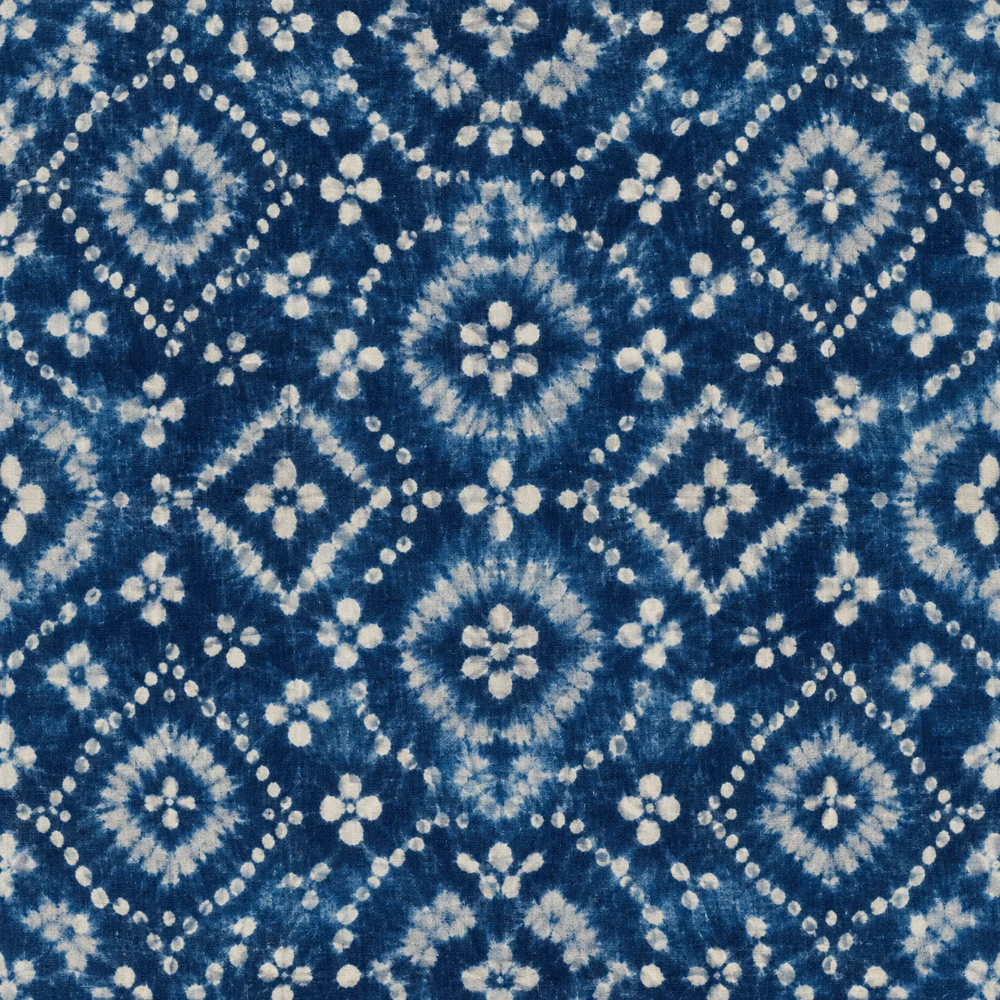

在云南，找一处喜欢的风景
山海之间，
山海之间，
慢慢漫游。
从地图上的一颗红星出发，
去看洱海，去遇见沿途的风景。
★点击红星，走进目的地
云南省 YUNNAN25° N / 101° E
★ 已开放目的地云南轮廓：Natural Earth · 公有领域
抵达入口景点游览顺序
可拖动地图 · 渔灯为模拟漂游 · 连线表示沿岸方向，非道路导航
沿着洱海，看见风景
白族扎染 · 国家级非物质文化遗产
一针一线，
从一块白布开始
一针一线，
留下蓝与白。
在苍山脚下的周城，把一块白布扎紧、染蓝，再拆开线结，纹样才慢慢显露。蓝与白之间，藏着白族手艺人的日常。
试着染一块布

先点“绞扎”，把白布收紧。
纹样为示意。真实手作各不相同，完整工艺还包含多道工序。
白族扎染技艺于2006年列入第一批国家级非物质文化遗产名录。工坊体验的时长与收费请向店家确认。